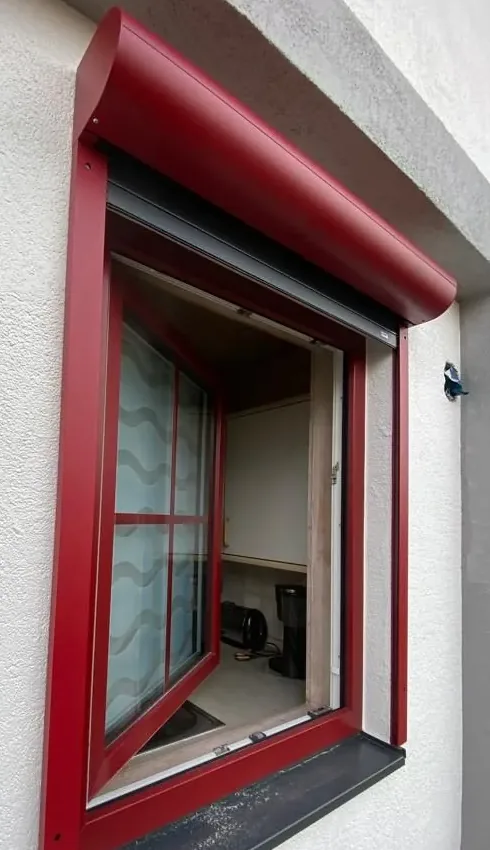
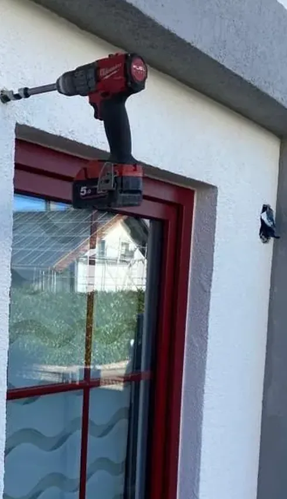

Einblicke
Handwerk, das
sichtbar wird.
Die folgenden Fotos stammen aus der bisherigen Projektgalerie unseres Betriebs. Sie zeigen Einbausituationen, Details und Arbeiten aus dem Alltag.
Vorher & Nachher
Ein Detail.
Ein anderer Eindruck.
Bewegen Sie den Regler und entdecken Sie die Veränderung am Fenster. Auch mit den Pfeiltasten bedienbar.


VorherNachherProjektaufnahme aus der bisherigen Website. Ziehen Sie den Bildtrenner nach links oder rechts.
Aus unserem Arbeitsalltag